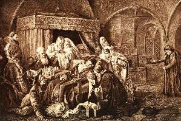

Борис Акунин
Мой календарь
Я уже писал, что март - отличный месяц для тиранов. Наступление весны для них нож острый.
Сегодня, например, отдал дьяволу свою черную душу главный садист русской истории Иван Грозный.
Под конец жизни он уже окончательно свихнулся от вседозволенности и мегаломании.
Страна была разорена, войны с Польшей и Швецией проиграны, в южных областях хозяйничали крымские татары, а царь-государь вымещал злобу на тех, кто был рядом и не мог себя защитить - снова и снова «бомбил Воронеж».
Одной из последних великих побед над иноземными злодеями и иноагентами стал разгром Немецкой слободы в Москве. Русь осталась без иностранных товаров и иностранных мастеров.
К 53 годам Иван Васильевич был ходячей развалиной - изъеденный сифилисом, разбухший, едва двигавший конечностями. Собственно, даже и не ходячей - пишут, что его носили в кресле.
В кресле пресветлый государь и окочурился. По преданию, играя в шахматы.
И несчастная Русь получила передышку. Царь Федор был «малоумный», но лучше малоумный правитель, чем вурдалак. Ума народу и своего хватит.
Уже писал и повторю еще раз: ханжество говорить, что радоваться смерти даже очень плохого человека - не комильфо. Если человек был очень плохой - радуйтесь.
Лозунг сегодняшнего дня: «Пусть всё плохое сгинет».